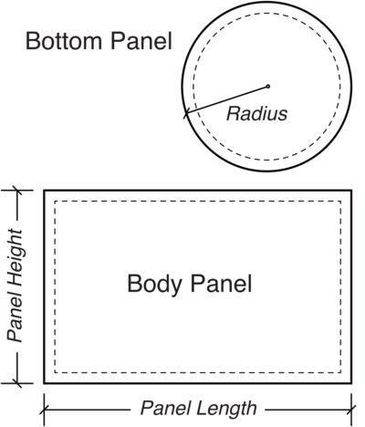

Create custom-sized stuff sacks effortlessly without complex calculations or 3D modeling. Simply input your desired finished 3D stuff sack dimensions, and our generator will calculate precise 2D pattern panels. If this is your very first time sewing, I recommend starting with Cinch Sack as sewing the round bottom of this stuff sack can be challenging for beginners.
Our provided panel dimensions already include the seam allowances and an integrated drawstring Cord Channel allowance of 1.5" (4 cm).
- Body Panel Length:
- Body Panel Height:
- Bottom Panel Radius:
For Stuff Sacks with a 6.5 in. (16.5 cm) diameter or less, you can now download a PDF paper pattern generated to the exact Bottom Panel Radius. Give it a try!